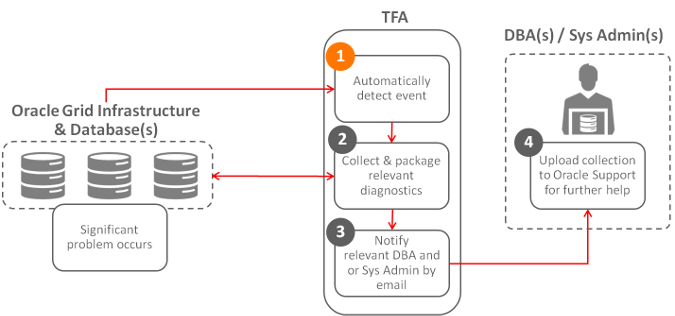

4.1.2 Oracle Trace File Analyzer Automated Diagnostic Collections
When running in daemon mode, Oracle Trace File Analyzer monitors important Oracle logs for events symptomatic of a significant problem.
Based on the event type detected, Oracle Trace File Analyzer then starts an automatic diagnostic collection.
The data collected depends on the event detected. Oracle Trace File Analyzer coordinates the collection around the cluster, and trims the logs around relevant time periods, and then packs all collection results into a single package on one node.
Oracle Trace File Analyzer does not do a collection for every event detected. When an event is first identified, Oracle Trace File Analyzer triggers the start point for a collection and then waits for five minutes before starting diagnostic gathering. The purpose of waiting for five minutes is to capture any other relevant events together.
-
If events are still occurring after 5 minutes, then Oracle Trace File Analyzer waits to complete diagnostic collection for up to a further five minutes for 30 seconds with no events occurring.
-
If events are still occurring 10 minutes after first detection, then Oracle Trace File Analyzer forces a diagnostic collection and generates a new collection start point for the next event.
Once the collection is complete, Oracle Trace File Analyzer sends email notification that includes the details of where the collection results are, to the relevant recipients.
Figure 4-2 Automatic Diagnostic Collections
Description of "Figure 4-2 Automatic Diagnostic Collections"
Table 4-1 Trigger Automatic Event Detection
| String Pattern | Logs Monitored |
|---|---|
|
|
Alert Log - DB Alert Log – ASM Alert Log – ASM Proxy Alert Log – ASM IO Server |
|
|
Alert Log - CRS |